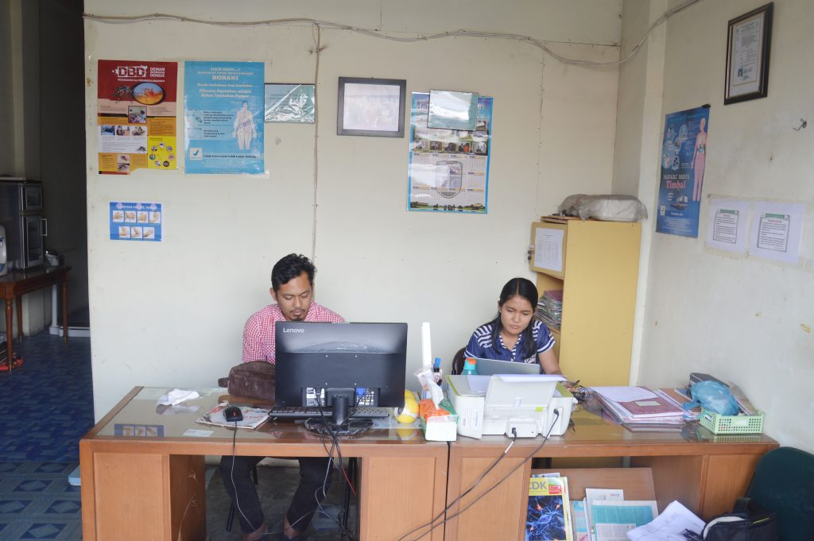

Perpustakaan
Perpustakaan Politeknik Informatika Del (PI Del) berdiri sejak tanggal 9 Januari 2002 dengan sistem pelayanan open acces (terbuka). Selanjutnya berubah nama seiring dengan berubahnya status Politeknik menjadi Institut sejak tahun 2013. Perpustakaan berganti nama menjadi Perpustakaan Institut Teknologi Del. Perpustakaan Institut Teknologi Del memiliki fungsi utama yaitu fungsi pendidikan. Pengadaan koleksi dan pengembangan minat baca internal dan eksternal Institut Teknologi Del dilakukan sebagai bagian dari kegiatan diseminasi kegiatan peningkatan minat baca.

Laboratorium
Fasilitas laboratorium komputasi dimaksudkan sebagai sarana kerja, pendidikan, penelitian maupun pengabdian pada masyarakat. Kepada para pengguna diharapkan pengertian dan kesadarannya untuk menjaga keutuhan dan keamanan peralatan yang ada, serta berperan dalam menciptakan suasana akademik yang lebih berhasil guna. Kesadaran ini hendaknya diterapkan terhadap semua peralatan sarana dan prasarana yang dimiliki oleh Institut Teknologi Del dan semua sistem komputasi lain yang dapat diakses melalui jaringan komunikasi yang tersedia.

Kantin
Kantin Politeknik Informatika Del menyediakan menu makanan yang bergizi dan sehat untuk semua mahasiswa/i. Menu yang disediakan selalu memenuhi standard gizi, sehingga mahasiswa bisa melaksanakan aktifitas perkuliahan dengan sehat dan prima. Setiap mahasiswa diwajibkan untuk makan di kantin tiga kali setiap harinya. Dalam pelaksanaan makan, mahasiswa dilatih juga untuk memiliki manner. Selain kantin, makanan/jajanan ringan bisa diperoleh di IT Del Shop. Dengan harga yang terjangkau, Pidelshop menyediakan berbagai kebutuhan mahasiswa

Klinik
Praktek umum dokter Del resmi didirikan pada bulan Mei tahun 2009, terletak disamping pintu masuk ke area kampus Institut Teknologi Del. Tujuan didirikan praktek umum ini yang terutama adalah untuk melayani siswa, mahasiswa, pegawai Del tetapi selain itu juga untuk melayani masyarakat disekitar lingkungan kampus. Praktek umum ini bersifat sosial, non-profit, tetapi juga tetap berusaha menjaga mutu pelayanan agar sesuai dengan standar pelayanan termutakhir.

Olahraga
Selain fasilitas untuk keperluan proses belajar mengajar, IT Del juga menyediakan sarana hiburan dan olahraga bagi warga kampus IT Del. Sarana ini dimaksudkan sebagai media untuk menghilangkan kejenuhan dari kegiatan sehari-hari di IT Del. Selain itu, dosen, staf dan mahasiswa IT Del mengadakan acara-acara yang bersifat hiburan pada waktu-waktu tertentu, antara lain: pertandingan olahraga dosen/staf dan mahasiswa, Nonton Bareng, Retreat rohani, jalan-jalan bersama.